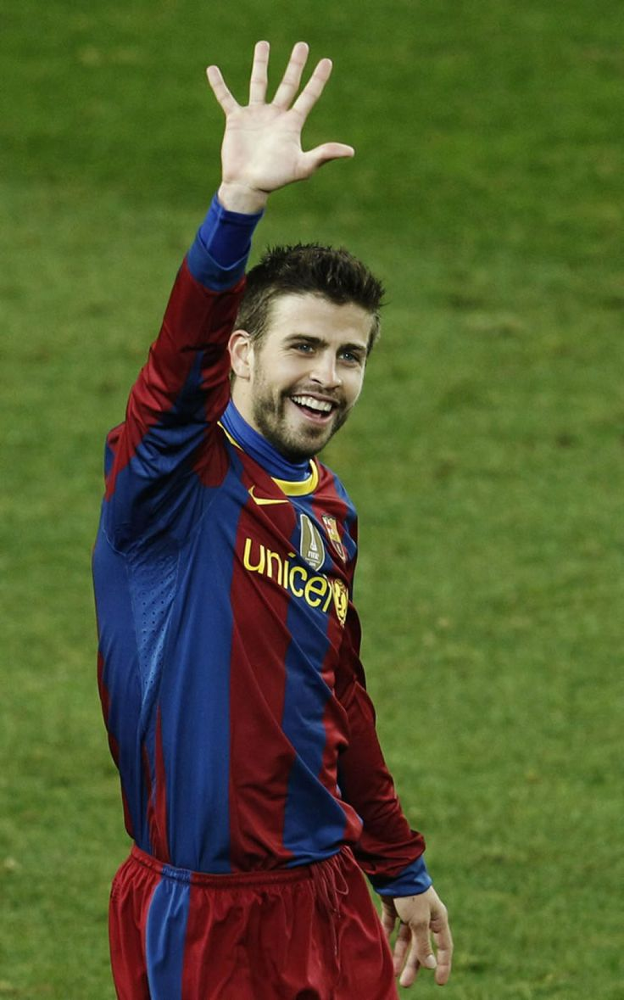

Pique
Powrót na stronę głowną
Gerard Piqué urodził się 2 lutego 1987 roku w Barcelonie, Hiszpania. Jest Hiszpanem i jednym z najlepszych obrońców w historii. Grał w Manchesterze United (2004–2008) i FC Barcelonie (2008–2022), gdzie zakończył karierę w 2022 roku.
